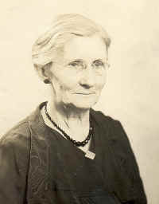

|
THE FAMILY OF ÉZILDA COTÉ
Gaudias and Georgiana would have fourteen children; most were born in Quebec City, in Saint-Sauveur parish, the last ones in Montreal. A funny little story: Every time Georgiana had a baby, Gaudias replaced their "bedroom set". Why? (Information from Claude Côté, Émilien's son, who heard it told many times by his aunts Blanche and Évangéline) Éva
(baptized Oliva) was born on November 1, 1883;
her godfather was Pierre Côté, a blacksmith and her paternal grandfather, and her
godmother Marie Duhault, her maternal grandmother. Laura was born on May 20, 1886; her
godfather was Georges Pageau, her maternal grandfather, and her godmother
Salomée Pleau-Côté, her paternal grandmother. Docilia was born on February 12, 1889; her godfather was William Pageau, a farmer from Charlesbourg and
the child's uncle, and her godmother his wife, Célina Pépin. Ézilda, our grandmother, was born on December 27, 1891, in Saint-Sauveur parish in Quebec City. Her godfather was Octave Paradis and her godmother his wife, Adeline Pageau. They were the child's uncle and aunt. She married Charles Consigny on July 28, 1919. Blanche was born on February 5, 1893. Her godfather was Alfred Pleau, a shoemaker and the child's uncle, and her godmother his wife, Élisa Pageau. Blanche died on March 12, 1894, at the age of one. Blanche was born on August 18, 1894.
Her godfather was Alfred Peltier, a saddler of Saint-Sauveur parish,
and her godmother his wife, Joséphine Roy. Albertine was born on December 2, 1895. Her godfather was Adélard Durand, son of Édouard Durand, a fruit merchant of Saint-Jean-Baptiste, and her godmother Éva Côté, the child's sister. Albertine died on June 19, 1896, at the age of seven months. Wilfrid was born on May 19, 1897. His godfather was Joseph Bussière, a milkman and the child's great-uncle, of Saint-Jean-Baptiste parish, and his godmother his wife, Rose Côté. Wilfrid died on August 11, 1897, less than three months old. Alfred was born on August 21, 1899. His godfather was Alfred Pageau, the child's uncle, and his godmother Émilia Lacombe. Alfred died on November 21, 1900, at the age of one year and three months. Évangéline was born on March 15,
1901. Her godfather was Rolland Pleau, a schoolboy and the child's cousin, and
her godmother Laura Côté, the child's sister. Note that Rolland
Pleau would marry Crescence Consigny, Charles's sister, in 1910. A memory of Claude Côté, Émilien's son: "I know there was no great love between Évangéline and her mother Georgiana. Georgiana put Évangéline out of the house with her suitcase on the doorstep. Her nickname was Ti-Cul (she was very small). Évangéline always lived with a common-law partner, Philémon Chiasson, known as the rag man. He had a gold tooth and was rather shabby and not too clean. They lived in a scrapyard whose entrance was at the corner of De LaSalle and Lafontaine streets. Their flat was at the back of the yard, on the second floor; it was very small and very clean." A memory of Nicole: "I remember going once, with Maman, to visit her aunt Évangéline. She and her common-law partner (in those days people said "concubin", and "living outside marriage" was socially shameful) lived on the second floor of their business, a single room built of wooden boards gone grey with time, the floor too; I don't think there was any insulation. It was very poor, but two things surprised me enough that I remember this visit: how clean and tidy the place was and, for me, who was just a little girl, the many dolls sitting everywhere, on the bed, on the couch, on the furniture".
Francois-Xavier was born on May 7, 1902. His godfather was Joseph Coulombe, of Saint-Roch, and his godmother Éva Côté, the child's sister. He died in Montreal on May 8, 1903, at the age of one. Marie-Anne was born in Montreal,
in Immaculée Conception parish, on July 30, 1903. Her
godfather was Elphège Da Sylva and her godmother Docilia Côté, the child's
sister. Azarias was born on January 20, 1906, in the Cité de Maisonneuve, Très-Saint-Nom-de-Jésus parish, Montreal. His godfather was Philias Mantha, a shoemaker of Saint-Jacques in Montreal, and his godmother Docilia Côté, the child's sister. He died on February 25, 1965. A memory of Claude Côté, Émilien's son: "Azarias was the one who stayed longest with his mother at 2179 De LaSalle. As I remember, around 1945 he went to live as man and wife with Antoinette Robert. In 1965 the couple lived at 1885 Joliette in Montreal, in a second-floor flat. On February 25, Antoinette Robert found him dead at the foot of the inside stairs, near the outside door. Apparently he fell down the stairs. ???" Émilien was born on September 17,
1907. His godfather was Moïse Delisle, of Joliette, and his godmother
Juliette Brastrash of Sainte-Brigitte in Montreal.
Gaudias died on May 14, 1918. He was then living at 299 Bourbonnière (south of Lafontaine), and his trade was carter (ref. Lovell directory). He was fifty-five; the cause of death is not known. Since his widow had no head for business, the company went bankrupt. (Information from Claude Côté, Émilien's son)  |
|||
|
WHAT WE KNOW OF EZILDA'S CHILDHOOD Ézilda
told me herself that she wanted to become a nun. So she
entered the convent, probably in Montreal, since that is where she
lived from 1903 on.
Some time later, she fell
ill and the religious community's superiors sent her back to her family
because, judged to be in fragile health
and illiterate, she was of no use to the community. |
|||
|
|
 Ézilda's parents, Gaudias Côté and
Georgiana Pageau, married on November 6, 1882, in Quebec City, in the church
of Saint-Sauveur parish.
Ézilda's parents, Gaudias Côté and
Georgiana Pageau, married on November 6, 1882, in Quebec City, in the church
of Saint-Sauveur parish. 
 On
the north side of rue Notre-Dame, west of rue
Jeanne-d'Arc, the cooperage (photo opposite)
made the barrels used to ship the refined sugar.
It is one of the oldest industrial buildings in
Montreal.
On
the north side of rue Notre-Dame, west of rue
Jeanne-d'Arc, the cooperage (photo opposite)
made the barrels used to ship the refined sugar.
It is one of the oldest industrial buildings in
Montreal.